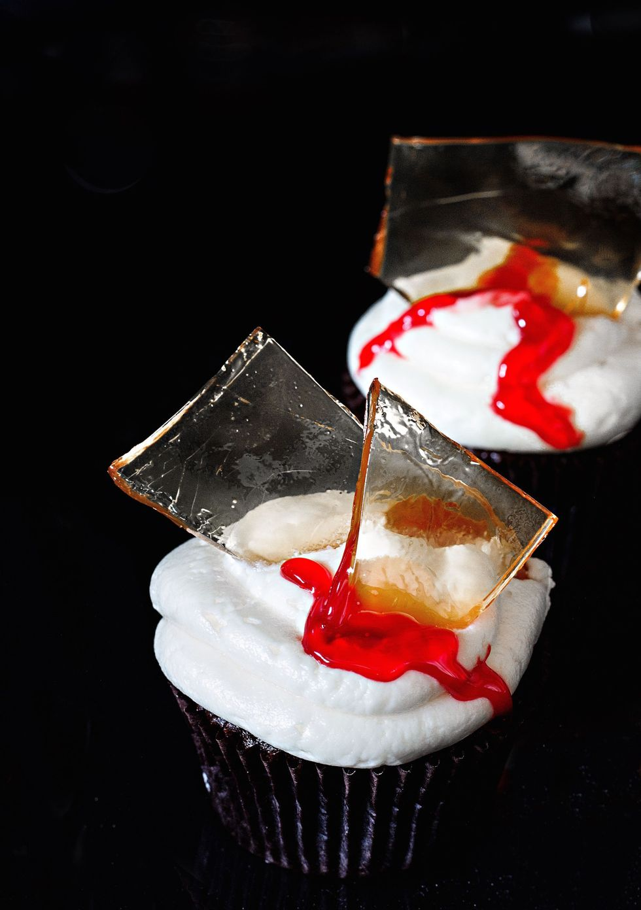

Halloween Blood Drip Cupcakes

Ingredients
For Cupcakes
- 1 1/4 c. all-purpose flour
- 1/2 c. Unsweetened cocoa powder
- 1/4 c. malt powder
- 1 3/4 c. sugar
- 1 tsp. instant coffee
- 1 tsp. baking soda
- 1 tsp. baking powder
- 1 tsp. kosher salt
- 2 large eggs
- 1 c. buttermilk
- 2/3 c. unsalted butter, melted
- 2 tsp. pure vanilla extract
- 2 c. Buttercream Frosting
For Glass Candy
- 1/2 c. light corn syrup
- 3 c. sugar
- 1/4 tsp. cream of tartar
- 1 1/2 c. water
- Red food coloring gel, for garnish
Directions
- Preheat oven to 350°. Fill cupcake pan with liners and set aside.
- Make cupcakes: In a large bowl using a hand mixer or in
the bowl of stand mixer using the whisk attachment, mix together flour,
cocoa, malt powder, sugar, coffee, baking soda and powder, and salt. Add in
eggs, buttermilk, butter, and vanilla and beat on medium until well
combined,about 2 minutes. Pour in 3/4 cup boiling water and beat until well
combined.
- Fill cupcake liners until each cup is two-thirds full, then bake until
toothpick inserted in the center comes out clean, 18 to 22 minutes. Remove
from oven and transfer to a wire rack to cool completely before
frosting.
- Make glass candy: Line a baking sheet with foil. Place
all ingredients in a small saucepan over medium-high heat and stir until
mixture begins to boil. Stop boiling and clip candy thermometer to side of
pan. Use a brush and water to wash down any crystals. Bring mixture to
300°, then pour hot candy mixture onto prepared pan. Set aside at least 1
hour, then break apart candy into shards.
- Assemble: Pipe frosting onto cupcakes and insert candy glass into
center. Pipe red gel onto cupcakes for a blood drip finish.
View original recipe
Contact Me
E-mail Me!
University of Montana
32 Campus Drive
Missoula, MT 59812